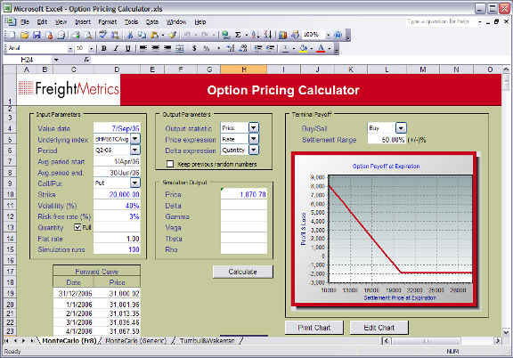
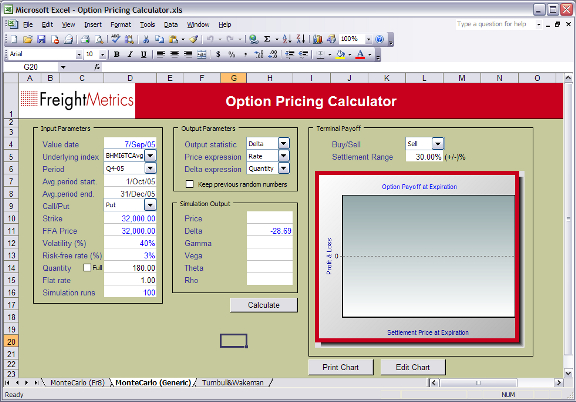
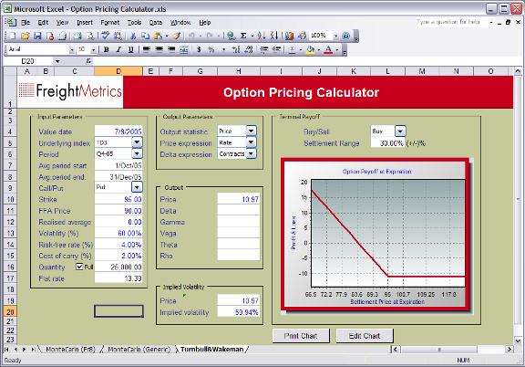

|
providing Shipping
Risk Management Solutions |
Option Pricing Calculator
The Option Pricing Calculator includes models using Monte Carlo simulation,
Turnbull and Wakeman, and FreightMetrics Monte Carlo simulation technique.
Generic Monte Carlo Simulation

FreightMetric's Monte Carlo Simulation Model

Turnbull and Wakeman Model

© 2005. FreightMetrics